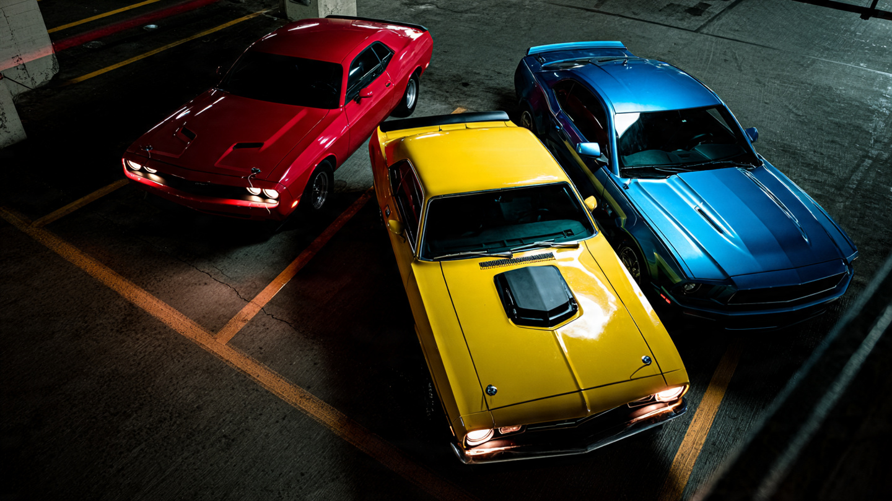

Every Other Muscle Car Got Safer. Dodge Chose Horsepower.

Between 2008 and 2023, the Dodge Challenger never got a redesign. Not once. That LC platform rolled off the Brampton, Ontario assembly line for fifteen consecutive years, collecting Mercedes-derived suspension parts and nostalgia points in roughly equal measure. What it did get, with clockwork regularity, was more horsepower: 425 in 2008, then 470, then 707 with the 2015 Hellcat, 840 with the 2018 Demon, and a ludicrous 1,025 with the 2023 Demon 170. Dodge treated the Challenger like a drag strip trophy case bolted to a chassis that predated the iPhone 4.
FARS data from 2014 through 2023 shows the consequences of that strategy with a clarity that no press release could obscure.
Pre-Hellcat Challengers (2009 through 2014 model years) averaged 13.5 occupant deaths per model year across the ten-year FARS window. Post-Hellcat models (2015 through 2021, each with at least two full years of road exposure) averaged 41 deaths per model year. The 2019 model year alone accounts for 69 fatalities in roughly four years on public roads, while the 2009 model year accumulated just 6 in a full decade of driving. Annualized, that is a 23-fold difference between the first and peak model years of the exact same car.
This would be unremarkable if every muscle car followed the same pattern. They did not. Chevrolet gave the Camaro a complete sixth-generation redesign for 2016: lighter unibody, better sightlines, recalibrated chassis dynamics. Its model-year death count dropped 45 percent, from an average of 89.6 per year for 2010–2014 models to 49.6 for 2015–2021 models. Ford executed a similarly thorough overhaul of the Mustang for 2015, swapping the live rear axle for independent rear suspension and modernizing the crash structure. Mustang deaths per model year fell 31 percent.
Dodge's Challenger moved in the opposite direction, the only one of the Big Three muscle cars where the FARS body count increased for newer model years and the only one that was never redesigned.
Impairment data eliminates the easiest counterargument before it forms. Across all three platforms, toxicology results are functionally identical: 22.5 percent of fatally crashed Challenger drivers tested positive for any impairment, versus 23.0 percent for Camaro and 21.9 percent for Mustang.[1] Nobody was drunker behind the wheel of a Challenger than behind the wheel of a Camaro. What separates these cars is not the driver but what the manufacturer chose to prioritize in the fifteen years between the first and last unit rolling off the line.
Chevrolet chose a new platform; Ford chose independent rear suspension. Dodge chose a bigger supercharger and a press event where they measured front-wheel lift height with a Guinness adjudicator present.
There is an obvious objection, and it deserves its full weight: Challenger sales peaked in 2018 and 2019, with roughly 55,000 to 61,000 units per year compared to around 30,000 to 40,000 in 2009 through 2013.[4] More cars sold means more cars on the road means more deaths, even if nothing else changes. But the Camaro and Mustang both had their own sales booms in the same era, and their death counts still fell with newer model years. Sales volume alone cannot account for a 2.49-fold increase when the two nearest competitors showed the opposite trend under similar market conditions. Something structural changed inside the Challenger, and the structural change was 600 additional horsepower delivered through a platform that was never reengineered to handle it safely.
IIHS confirms the pattern from an entirely independent dataset. Their most recent driver death rate analysis flags the Challenger at 154 deaths per million registered vehicle years for 2017–2020 models, placing it among the deadliest vehicles sold in America alongside the Mitsubishi Mirage.[2] The same IIHS study specifically called out muscle cars as a category, noting that "vehicle image and aggressive marketing" contribute to crash risk beyond what the hardware alone would predict.[3] When the IIHS evaluated the Challenger's crashworthiness, they used the same 2015/2016 test vehicle for every model year through 2023, because the body structure never changed enough to require a new test.
If you own a 2015 or newer Challenger, check your VIN at nhtsa.gov/recalls for open recalls on the powertrain and driveshaft components that Stellantis has issued across multiple SRT model years. If you are shopping for a used muscle car and safety matters alongside straight-line speed, the sixth-generation Camaro (2016+) and S550 Mustang (2015+) have the FARS trajectory you want: newer model years dying less, not more. For insurers and fleet managers running any of the Big Three platforms, IIHS driver death rates by make and model are updated annually and should inform risk pricing for the Challenger differently than for its competitors.
The Challenger was many things: a sales success, a cultural icon, a farewell letter to the internal combustion excess that defined a generation of enthusiast marketing. It was also a controlled experiment in what happens when you add 600 horsepower to a car you forgot to redesign. FARS ran the experiment for a decade, and the data is in.
Sources & References
- NHTSA, Fatality Analysis Reporting System (FARS), 2014–2023. Model-year deaths, toxicology, and per-model rates derived from bulk FARS CSV data. nhtsa.gov
- IIHS, “Driver death rates by make and model,” 2017–2020 models. iihs.org
- IIHS, “Latest driver death rates highlight dangers of muscle cars,” 2024. iihs.org
- MotorTrend / Dodge sales data. Challenger sold 61,000 units in 2019, surpassing Camaro output. motortrend.com
Source: NHTSA FARS 2014–2023. FARS model-year death counts do not distinguish between Challenger trim levels (V6 SE vs. Hellcat). Deaths reflect all model-year-specific fatalities during the study period, not per-trim breakdowns. Exposure time varies: 2019 MY has ~4 years in the window; 2009 MY has the full 10. The fact that 2019 still dominates with half the exposure makes the pattern more striking, not less. VMT estimates are aggregated across all model years, not per-year. See methodology for caveats.